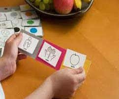

Servicii si tarife pentru copii si adulti
Pentru a putea descoperi punctele forte ce vor conduce catre sursa ingrijorarilor tale, pentru a putea avea o viata mai echilibrata este nevoie de lucru in echipa.
Este nevoie de o colaborarea respectabila, cu empatie si fara judecati.
Doar impreuna vom clarifica toate framantarile, si vom stabili demersul terapeutic care va ajuta in luarea celor mai bune decizii pentru tine.
Astept cu nerabdare sa lucram impreuna, in orice situatie problematica pe care nu o mai poti gestiona, si cu o buna consiliere sa descoperi greselile cat si cea mai buna straregie pentru rezolvarea lor.
Doar impreuna vom clarifica toate framantarile, si vom stabili demersul terapeutic care va ajuta in luarea celor mai bune decizii pentru tine.
Astept cu nerabdare sa lucram impreuna, in orice situatie problematica pe care nu o mai poti gestiona, si cu o buna consiliere sa descoperi greselile cat si cea mai buna straregie pentru rezolvarea lor.

Evaluare clinica (50 minute)
100 Lei
Evaluare IQ (60 minute)
100 Lei

Terapia ABA
In curand...
- Anxietate 000lei
- Depresie
- Tulburari Obsesiv-Compulsiv
- Atac de panica
- Tulburari de personalitate
- Tulburari de dispozitie
- Consiliere in situatii de criza
- Trauma/recuperare psihologica posttraumatica
- Probleme relationale/consiliere maritala
- Tulburari sexuale
- Adictii
- Psihoze
- Abuz de substante
- Ideatii suicidare
- Psycho-oncology (CBT)
- Business coaching
- Life coaching
- Dezvoltare a abilitatilor de comunicare, negociere si optimizare organizationala
- Terapie de familie
Alte servicii
- Colaborari
- Implicare sociala
- Atelierele Dezvoltarea Inteligentei Emotionale prin Tehnici de Desen
- Workshopuri
- Initial este nevoie de o sedinta de evaluare care de regula dureaza o singura sedinta, dar in unele cazuri poate fi nevoie de 2 sau 3 sedinte. In urma evaluarii se stabileste daca este sau nu nevoie de terapie si care va fi frecventa sedintelor. Se ofera consilierea psihologica a parintilor si, daca este cazul, recomandare pentru a consulta si specialisti din domenii conexe.